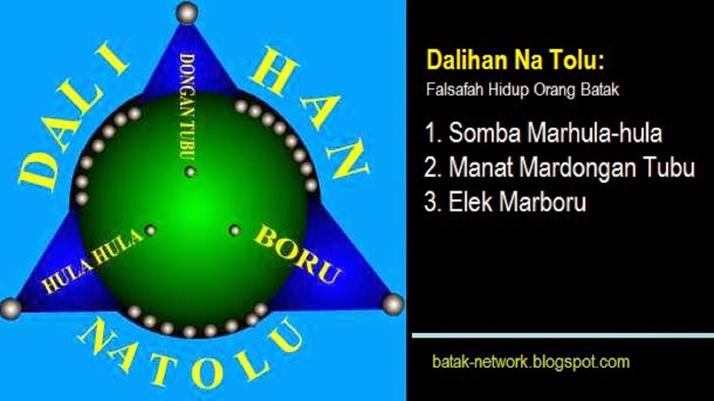
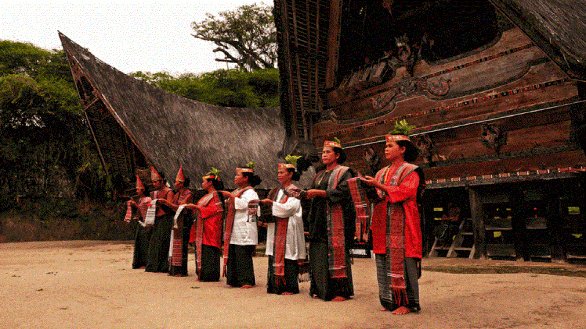

Dalihan Na Tolu ini menjadi pedomanan hidup orang batak dakam kehidupan bermasyarakat. Dalihan Na Tolu buakanlah kasta karena setiap orang batak memiliki ketiga posisi tersebut: ada saatnya menjadi Hula-hula, ada saatnya menempati posisi Dongan Tubu dan ada saatnya menempati posisi BORU. Dengan Dalihan Na Tolu, adat Batak tidak memandang posisi seseorang berdasarkan pangkat, harta atau status seseorang.
Dalihan Natolu

Somba marhula-mula
(hormat kepada pihak Hula-hula.)
Somba = Hormat. Hulahula/Mora adalah pihak keluarga dari isteri. Hula-hula ini menampati posisi yang paling dihormati dalam pergaulan dan adat-istiadat Batak(semua sub-suku Batak) sehingga kepada semua suku batak dipesankan harus hormat kepada Hulahula (somba marhula-hula).
Adat batak menentukan sikap terhadap ketiga kelompok Yaitu: Somba, Manat,dan Elek. Kita bisa menjadi bagian dari masing-masing pihak dalam perjalanan hidup kita menghadapi orang Batak lainnya. Dengan demikian, semua orang batak dapat menduduki salah satu posisi tersebut, tidak selalu dalam posisi boru atau posisi dongan tubu.
Semua posisi itu sama kuatnya dan sama petingnya serta saling melengkapi satu sama lainnya seperti ketiga batu yang membentuk tungku itu di masa lalu.
Dalihan Na Tolu
ini menjadi pedomanan hidup orang batak dakam kehidupan bermasyarakat. Dalihan Na Tolu buakanlah kasta karena setiap orang batak memiliki ketiga posisi tersebut: ada saatnya menjadi Hula-hula, ada saatnya menempati posisi Dongan Tubu dan ada saatnya menempati posisi BORU. Dengan Dalihan Na Tolu, adat Batak tidak memandang posisi seseorang berdasarkan pangkat, harta atau status seseorang. Dalam sebuah acra adat, seorang jenderal harus siap bekerja untuk melayani dan mensukseskan ulaon keluarga piak istri yang kebetulan seorang kapten. Itulah realitas kehidupan orang batak yang sesungguhnya.
Popular Post

Cerita singkat asal muasal suku batak
Blog SIPITUAMA - Horas ma di hita ganup marsad-sada. Parjoloma, hami mandok mauliate tu Tuhan ta Debata more...

Inilah Tarombo ni Marga Sipitu Ama(Silsilah Keluarga Besar Sipitu Ama
Sebagai pomparan ni marga sipituama, alangkah baiknya kita mengetahiu Tarombbo atau Sisilsilah Marga Sipitu Ama. Tarombo ni More...

Mengungkap Arti Dibalik Kata Horas
HORAS.COM -"Horas !!! horas !!! horas !!!, Sering jika bertemu dengan orang Batak, kata pertama yang di ucapkan adalah "HORAS", Nah apa sebenarnya More...

Suku Batak, Nilai Budaya dan Aspek Pembangunan
Blog SIHOTANG - Kembali memaparkan tentang Batak atau suku Batak, Tentu tujuannya adalah agar kita mengetahui budaya Batak lebih jauh dalam lagi More...
User Rating
4.1 average based on 254 reviews.
Website Budaya Batak Toba
Klik disini
Somba = Hormat. Hulahula/Mora adalah pihak keluarga dari isteri. Hula-hula ini menampati posisi yang paling dihormati dalam pergaulan dan adat-istiadat Batak(semua sub-suku Batak) sehingga kepada semua suku batak dipesankan harus hormat kepada Hulahula (somba marhula-hula).
Elek = Hati-hati. Dongan Tubu/ Hahaanggi disebut juga dongan sabutuha adalah saudara laki-laki satu marga. Arti harfianya lahir dari perut yang sama. Mereka ini seperti batang pohon yang saling berdekatan, saling menopang,walau saking saking dekatnya kadang-kadang saling gesek.Namun, pertikaiantidak membuat hubungan satu marga bisa terpisah. Diumpamakan seperti air yang dibelah pisau, kendati dibelah tetapi tetap bersatu.Namun kepada semua orang Batak (berbudaya batak) dipesankan harus bijaksana kepada saudara semarga.Disitilahkan, manat mardongan tubu.
Elek = bujuk. Boru/Anak Boru adalah pihak keluarga yang mengambil isteri dari suatu marga (Keluarga lain). Boru ini menempati posisi saling rendah sebagai "parhobas" atau pelayan, baik dalam pergaulan sehari-hari maupun (terutama) dalam setiap ucapara adat. Namun walaupun berfungsi sebagai pelayan bukan berarti bisa diperlakukan dengan semena-mena. melainkan pihak boru harus diambil hatinya, dibujuk, diistilahkan: Elek marboru.